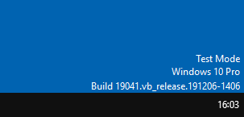

# Test-Signed
## Enable Test Mode
Enabling test mode allows you to load test-signed kernel drivers.
This is what driver developers do when they're writing and testing their driver.
•
https://docs.microsoft.com/en-us/windows-hardware/drivers/install/the-testsigning-boot-configuration-optionA driver will be test signed when compiling in Visual Studio.
To enable test mode, run
bcdedit in an Administrator cmd/powershell prompt:
bcdedit /set nointegritychecks on; bcdedit /set testsigning onAnd reboot.
You should see test mode enabled in the bottom right
If you get
The value is protected by Secure Boot policyyou have to boot into your BIOS and disable Secure Boot
## Loading
With test mode enabled, you can now load your driver via the normal methods.
Refer to Standard Methods to load your driver.